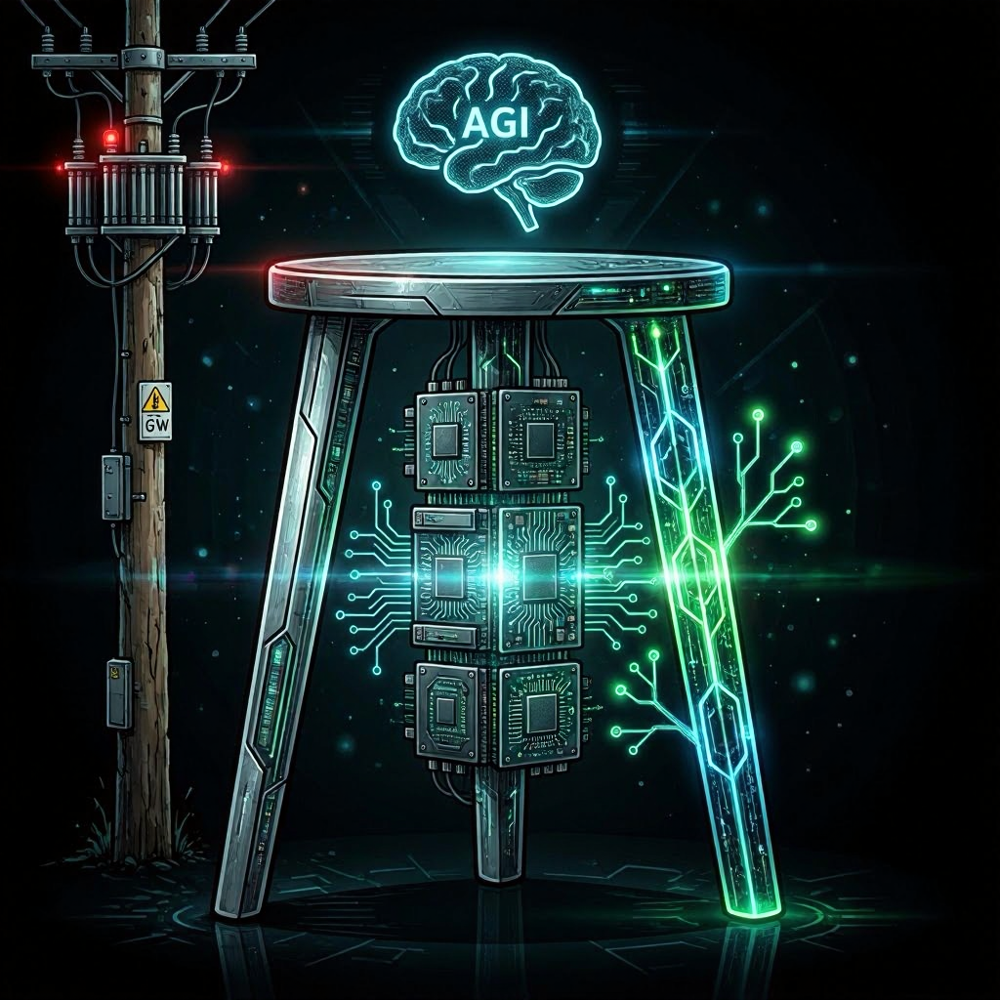

AI's path to AGI isn't blocked by algorithms. It is blocked by substations, chip fabs, and architectures that burn more than they produce.
That is the AGI bottleneck nobody in Silicon Valley wants to name, and it is more physical than computational.
Here is the problem in three words: power, compute, and efficiency. Think of them as a three-legged stool. All three need to hold weight. Right now, at least two are cracked, and the third is mostly duct tape and hope.
AI labs keep promising GPT-6, Claude 5, and Gemini Ultra. Meanwhile, they cannot get enough megawatts to power their next training run. The disconnect between the slide decks and the substation load reports is where this story lives.
Here is what nobody in the keynote slides wants to tell you.
I. The Power Bottleneck
The Numbers Nobody Believes
Let's start with the numbers, because they are worse than most people think.
The International Energy Agency projects data center electricity demand will double by 2030. IDC goes further, projecting that global data center energy consumption will triple by 2029. Not 2050. Not 2040. The end of this decade.
Put that in human terms. A single hyperscale data center campus now pulls as much power as a mid-sized city. When Google and Anthropic were reported to be negotiating a deal that includes up to 5 gigawatts of computing power, that was not a typo. Five gigawatts is the output of roughly five large nuclear reactors. It is more electricity than some small countries consume.
The grid was not built for this. It was built for lightbulbs, refrigerators, and factories. It was not built for gigawatt-scale AI campuses dropping onto the landscape like alien motherships and demanding power on a software company's timeline.

The 100-Year-Old Grid
"Our current grid system is about 100 years old," Bridget Bartol, executive director of industry and regulatory affairs for the grid at NEMA, told Data Center Knowledge.
Let that sink in. The infrastructure delivering electricity to the most advanced computing systems ever built was designed before the transistor existed.
The US electrical grid was engineered for steady, predictable loads. AI data centers are the opposite: massive, concentrated, and demanding power right now.
The Grid Acceleration Coalition filed with FERC on April 7, 2026, with major industry players essentially begging regulators to move faster. Their argument is that FERC Order 1000's competitive bidding mandates for transmission projects in MISO and SPP cause 16 to 20 month delays, and those delays threaten AI-driven power demand.
However, FERC moves at regulatory speed, which is measured in years. AI deployment moves at software speed, measured in weeks. This mismatch is not temporary. It is structural. You cannot regulatory-filing your way to a new substation in six months. You also cannot train GPT-6 on a promise.
Behind-the-Meter: The New Standard
Here is the telling part: hyperscalers are increasingly bypassing the grid entirely. Behind-the-meter generation, where data centers produce their own power on-site rather than drawing from the public grid, has gone from a contingency plan to standard practice.
"Behind-the-meter is gaining traction, especially in power-constrained areas, because it enables faster deployment, avoids interconnection delays, and reduces reliance on congested grids," IDC research manager Olga Yashkova told DCK.
Translation: the richest tech companies in history have decided the public grid is not reliable enough for their workloads. They are building their own power plants. When that becomes the norm, pay attention. It means the shared infrastructure model that built the internet is breaking down under AI's weight.
The trade-offs are real. We are seeing higher upfront costs, continued reliance on natural gas, and a future where AI compute is literally gated by who can afford their own power plant.
On-site natural gas paired with battery storage is the most common configuration. It works today. It is also locking in fossil fuel dependency for facilities expected to operate for decades.
That is not democratization. That is feudalism with better branding. It is becoming the default because the alternative of waiting for the grid means missing the market window entirely.
SMRs: The Right Answer to the Wrong Deadline
Small Modular Reactors are the most elegant solution to AI's power crisis. These are compact nuclear reactors that can be manufactured at scale and deployed adjacent to data centers. Several hyperscalers have already signed SMR agreements. IDC identifies them as the most commercially advanced emerging option, with pilot projects targeting operation as early as 2026.
There is just one problem with that timeline. Operations starting "as early as 2026" means maybe 2027, probably 2028, and realistically 2030 and beyond for anything at scale.
AI needs answers now. Not in 2032. Not when the regulatory review completes. Now.
SMRs are the right answer to the wrong deadline. Those signed agreements are paper promises, not electrons. They will matter enormously in the 2030s. They do almost nothing for the training runs being planned this year and next.
The grid won't be modernized by Tuesday. SMRs won't arrive by next quarter. But the GPUs are arriving now. That is the gap, and it is growing.
The power problem is the most slept-on constraint in AI. Everyone is watching model benchmarks. Nobody is watching substation load reports. Those substation reports are going to matter more than the benchmarks for the next five years.
II. The Compute Bottleneck
GPU Fabs Are Maxed Out
If power is the most slept-on bottleneck, compute is the most visible one. Because it is visible, it is the one getting the most money thrown at it.
TSMC is at capacity. Samsung is chasing. Intel is in the middle of the most consequential rebuild in its 58-year history. Its stock surged 114% in April 2026, marking the best month in the chipmaker's 55-year Nasdaq history, because the market is betting that capacity expansion translates to revenue.
The bet makes sense. Here is what the stock charts do not show: you cannot just print more H200s. The machines that make the machines, such as extreme ultraviolet lithography systems and wafer fabrication lines, are booked solid.
Fab construction takes three to five years from groundbreaking to production. Model scaling cycles run six to twelve months. Do the math. Even if every announced fab expansion executes perfectly, supply does not catch up to projected demand until the end of the decade at the earliest.
GPU Allocations: A Blood Sport
If you are not a top-five tech company, good luck getting a meaningful GPU cluster this year. Startups, mid-size labs, research institutions, and even governments are fighting for whatever allocations the hyperscalers do not hoover up.
This is not a free market. It is a resource war.
When Google is reportedly committing $40 billion to Anthropic partly to secure TPU compute at multi-gigawatt scale, what chance does a 20-person startup have? When those same hyperscalers are pre-selling capacity at gigawatt scale before it is even built, the game is already over for anyone who is not a named anchor tenant.
The cloud was supposed to democratize compute. Instead, AI is re-concentrating it at a scale that makes the mainframe era look pluralistic. Capacity is being allocated years in advance to the highest bidders. "AI capacity is increasingly being pre-sold at gigawatt scale," as DCK reported on May 1. The on-demand cloud model that built a generation of startups does not apply anymore. You cannot spin up a thousand A100s on a credit card. Those chips were spoken for eighteen months ago by a company with a market cap larger than most countries' GDP.
Google Cloud grew 63% year over year in Q1 2026, with backlog expanding past $460 billion. AWS hit $37.6 billion, up 28%. Microsoft Azure grew 40% while capex actually declined sequentially, moving from $37.5 billion to $31.9 billion. That last data point matters. It shows Microsoft is getting more efficient with its spending while still growing.
The overall picture remains clear. Hyperscaler capex is running at World War II industrial mobilization levels, and supply still lags demand.
Steven Dickens of HyperFrame Research put it bluntly to DCK, stating, "We are in a phase where infrastructure is the limiter, and it is not close. Demand is outstripping available capacity across every hyperscaler." He pointed to power, cooling, and permitting, not silicon, as the primary constraints.
New Architectures Are Buying Time
Here is where the story gets interesting. While fabs build and queues grow, architecture innovations are acting as a cheat code.
Mixture of Experts (MoE), Multi-Head Latent Attention (MLA), and other architectural tricks are squeezing dramatically more performance from existing hardware.
DeepSeek V4 proved you do not need the biggest cluster to train a frontier model. Released in April 2026, V4 packs 1 trillion MoE parameters and a 1 million token context window, pricing at $0.30 per million tokens. The V4-Pro model requires only 27% of the compute power used by its predecessor V3.2 to process one million tokens.
They didn't out-spend OpenAI. They out-thought them.
Architecture is the pressure release valve. It is not a permanent solution, but it buys the years that fabs and grid upgrades need. Every efficiency breakthrough in model design means the compute you can get goes further while you wait for more.
Consider what is actually happening here. MoE architectures like DeepSeek V4 activate only a fraction of total parameters per token. A 1 trillion MoE model might only activate 37 billion parameters per forward pass. You get the knowledge density of a massive model with the compute cost of a much smaller one. That ratio, roughly 27-to-1 of total parameters to active parameters, fundamentally changes the economics for anyone who is not running a hyperscaler's budget.
MLA takes this further. By compressing the key-value cache during inference, it reduces memory bandwidth requirements—the real bottleneck for serving large models at scale. These are not academic curiosities. They are production architecture decisions that separate the teams that can deploy from the teams that can only demo. For a deeper dive, see the DeepSeek-V2 paper on arXiv that introduced MLA.
What Wall Street Just Told You
Here is something the market is already pricing in, whether analysts are saying the words or not.
Alphabet overtook Nvidia as the world's most valuable company in early May 2026, pushing toward $5 trillion in market cap. Read that again. Nvidia, the company that literally prints the silicon the entire AI industry runs on, is no longer the most valuable company on Earth. Alphabet is.
Alphabet has all three legs: Gemini for models, Google Cloud for compute, and Waymo plus its broader AI portfolio for applications. Nvidia dominates exactly one leg: compute hardware. Wall Street just voted that breadth beats depth.
Meanwhile, Intel's stock nearly doubled in a historic month. Capital flooding into fab capacity means the market believes the compute bottleneck has a price tag, and that price tag is worth paying.
Money can solve the chip shortage eventually. What money cannot do is speed up grid construction the same way. The compute bottleneck has a dollar figure. The grid bottleneck has physics and regulatory law.
Wall Street just told you that compute dominance alone is not enough. The market is pricing in all three legs, whether anyone is calling it the triad or not.
III. The Efficiency Solution
DeepSeek Proved the Industry Wrong
DeepSeek V4 is the single most important counterargument to AI doomerism because it proved that frontier performance does not require frontier scale.
Using MoE architectures, MLA, and carefully curated training data, DeepSeek achieved GPT-4-class performance at a fraction of the presumed compute budget. At $0.30 per million tokens with a 1-million-token context window, they are competing on price at a level that changes the unit economics of inference.
The lesson isn't just that DeepSeek is better. The lesson is that the industry has been over-indexing on brute force because brute force was available. When brute force hits a wall, which is happening now in the form of power constraints and fab queues, the teams that know how to be clever win.
DeepSeek did not beat OpenAI by writing a bigger check. They beat them by writing better code.
This is the efficiency leg of the stool, and it is the one that buys time while the other two legs get built. However, this massive win in computational efficiency introduces an entirely new set of macro-economic problems.
The Jevons Paradox Problem
Now for the uncomfortable part: efficiency does not reduce consumption. It increases it.
This is the Jevons Paradox, first observed in 1865 with coal. When a resource becomes more efficient to use, total consumption goes up, not down. Britain's coal engines got more efficient, and Britain burned more coal than ever.
AI efficiency gains mean cheaper inference. Cheaper inference means more models, more agents, more API calls, and more of everything else. More everything means we still need the power.
Every DeepSeek breakthrough makes AI cheaper to run. Cheaper AI means more AI. More AI means the grid strain does not go away. It just gets spread across more workloads.
Efficiency is necessary, but it is not sufficient. It makes the problem manageable while other solutions arrive, but it does not eliminate the root issue.
This part of the efficiency conversation gets glossed over far too often. The people shipping MoE architectures and MLA optimizations are doing real engineering, and the gains are real. But if you think efficiency alone gets us to AGI without also solving power and compute, you are putting a fuel-efficient engine in a car heading toward a brick wall at 90 miles per hour. You will hit the wall slightly later and with better miles per gallon.
Sovereignty as a Pressure Release Valve
Here is where the third leg gets interesting.
HPE's Sovereign AI Factory strategy, announced this week, is deploying Cray exascale systems with full governance frameworks for nation-states. Deployments are already underway at Argonne National Laboratory in the US and the High-Performance Computing Center Stuttgart (HLRS) in Germany. Sovereign support of NVIDIA Mission Control software is planned for 2026.
Countries are building their own AI infrastructure rather than leasing it from Mountain View or Seattle. This matters for the triad because it decentralizes compute demand.
When inference is distributed across national-level infrastructure instead of concentrated in three Northern Virginia counties and a few Oregon river valleys, bottlenecks become local problems instead of global ones. Not everything needs to run through a hyperscaler.
HPE is selling governments the same thing hyperscalers have: AI infrastructure. But there is one critical difference. These sovereign factories are not sharing power lines with your Netflix stream. They are purpose-built, on dedicated power, in locations chosen for energy availability as much as latency.
This is infrastructure diversity, and it is the efficiency play nobody talks about. It is not architectural efficiency like MoE or MLA. It is not algorithmic efficiency found in curated data and better training recipes. It is systemic efficiency. We are no longer putting every egg in the same overloaded basket.
The HPE strategy is not an isolated move. It is part of a broader pattern where the infrastructure layer is diversifying whether hyperscalers like it or not. When nation-states build their own AI factories, they are not just asserting digital sovereignty. They are unwittingly solving a distributed systems problem that the centralized AI industry created for itself.
The more inference happens in sovereign facilities on sovereign power grids, the less catastrophic any single regional constraint becomes. That is system-level efficiency, and it might end up being the most important kind.
Conclusion: All Three Legs
AGI needs all three legs of the stool: power, compute, and efficiency.
Right now we are falling short on at least two, and the third is held together by architecture tricks and sovereign AI bets that most of the industry has not internalized yet.
Here is an honest timeline: realistic AGI is further out than the keynote circuit suggests. This is not because of algorithms, as our software is far ahead of our infrastructure. It is because the physical world has constraints that venture capital and ambition cannot override on demand.
The path forward operates in a strict order:
Efficiency buys time: DeepSeek, MoE, MLA, and sovereign distribution will carry the industry through 2027.
Fab investment delivers compute: TSMC expansion, the Intel rebuild, and Samsung catch-up operations will come online in three to five years.
Grid modernization and SMRs deliver power: Expect meaningful SMR contributions around 2028, with national-scale grid upgrades arriving in 2030 and beyond.
This isn't doomerism. It is realism with a path forward. The problems are solvable. They are just not solvable on the timeline the hype machine is selling.
The AGI race is not a sprint. It is a logistics problem wearing a technology costume. And logistics problems do not care about your press release.
Tomorrow: What all of this means for your code, your 503 errors, and your app's uptime. If you think the power problem is abstract, wait until it takes down your production agent at 3 AM. That piece is called "The Grid Can't Save You," and you should read it before it reads your error logs.
Get More Articles Like This
AI infrastructure is the defining constraint of this decade. I'm documenting every bottleneck, breakthrough, and reality check as the industry collides with the physical world.
Subscribe to receive updates when we publish new content. No spam, just real analysis from the infrastructure layer.